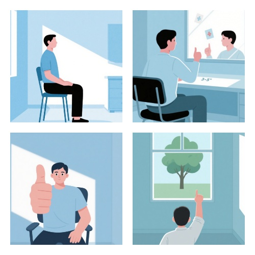
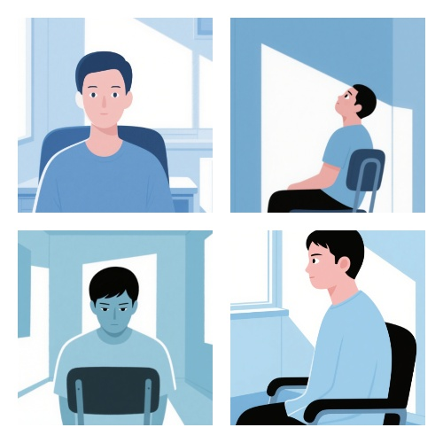
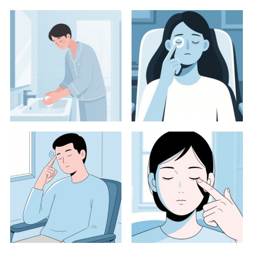

近视矫正运动指南
通过科学的眼部运动缓解视疲劳，改善视力
1. 远近调节训练

1
坐直或站直，保持良好姿势
2
将拇指举在面前约25厘米处，注视拇指10秒
3
然后将视线转移到3-5米外的物体，注视10秒
4
交替进行10-15次
小贴士：
这个练习可以帮助眼睛调节焦距的能力，每天做2-3次效果更佳。
2. 眼球转动训练

1
保持头部不动，仅移动眼睛
2
缓慢向上看，保持2秒
3
缓慢向下看，保持2秒
4
缓慢向左看，保持2秒
5
缓慢向右看，保持2秒
6
顺时针转动眼球5圈，然后逆时针转动5圈
小贴士：
动作要缓慢平稳，不要过快。如果感到头晕，可以适当减少次数。
3. 眼睛按摩放松

1
洗净双手，轻轻闭上眼睛
2
用食指和中指轻轻按压眼球上方（眉骨下方）5秒
3
用拇指轻轻按压太阳穴，同时做小圆圈按摩10秒
4
用食指和中指从内眼角向外眼角轻轻推按10次
5
最后用掌心轻轻覆盖眼睛30秒，感受温暖和黑暗
注意：
按摩时力度要轻柔，切勿用力按压眼球本身。
4. 20-20-20法则
1
每使用电子设备20分钟
2
抬头看20英尺（约6米）外的物体
3
持续注视20秒
4
然后继续工作
小贴士：
可以设置手机提醒来帮助养成这个习惯，这对预防和缓解视疲劳非常有效。